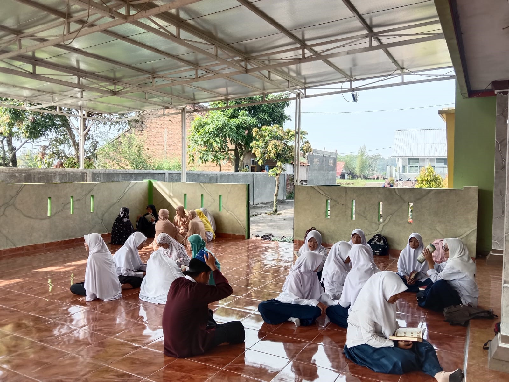

Kegiatan Tadarus
Tadarus menurut bahasa berarti belajar. Sedangkan menurut istilah biasa diartikan dan digunakan dengan pengertian khusus, yaitu membaca al-Qur'an semata-mata untuk ibadah kepada Allah dan memperdalam pemahaman terhadap ajaran al-Qur'an.
Keutamaan Tadarus
- Meningkatkan kualitas ibadah
- Mendapatkan pahala yang besar
- Mendapatkan keberkahan dari Al-Qur’an
- Menjaga hubungan dengan Allah SWT.
- Mendapatkan hikmah dan pembelajaran dari Al-Qur’an
- Menambahkan keimanan dan ketakwaan/li>
Tadarus di pondok pesantren Islamic Center Limbangan selama bulan ramadhan biasa dilakukan di mesjid secara bersama - saman dengan target bacaannya masing - masing dan biasa dilakukan dalam 4 waktu yaitu:
- Sesudah kultum subuh
- Sesudah waktu Dhuha
- Sesudah Sholat Dzuhur berjamaah
- Sesudah Sholat Ashar berjamaah
(Minggu, 02 April 2023, Ustadzah.Icha Azizah Nuralifah)